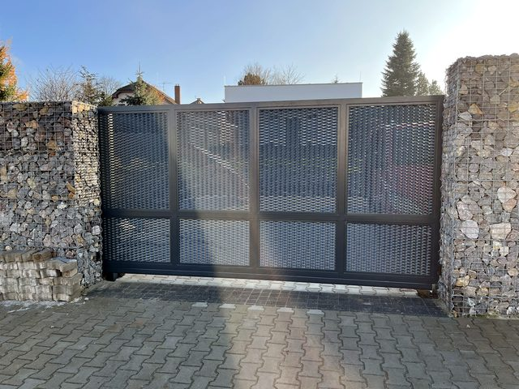
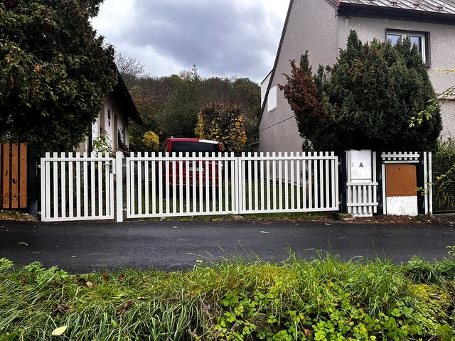
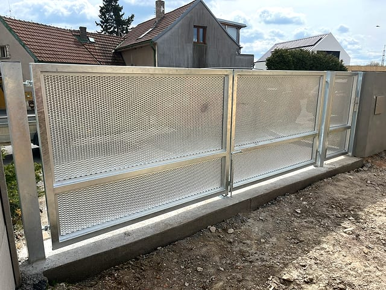
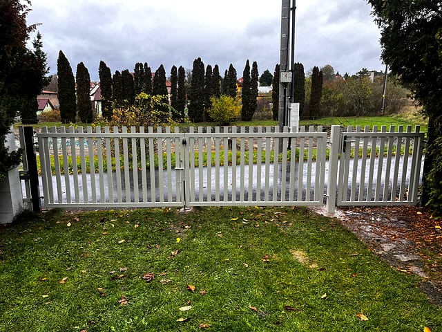
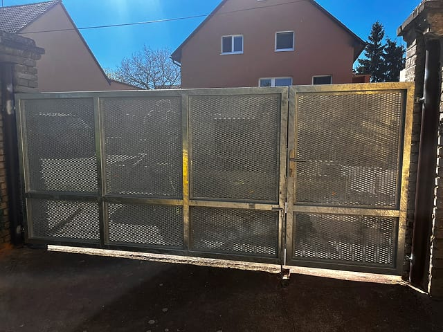

Typical cases include a faulty operator, noisy movement, older doors, a new entrance gate, apartment buildings or company access.
Real work examples
Door, gate, operator and barrier projects
Real photos show custom doors, gate installation, operator service, barriers and access systems for homes, companies, apartment buildings and managed sites.
- English communication available
- 30+ years of practice
- Prague and Central Bohemia
Direct answer
What the projects prove
The project examples show real Vrata Šnábl work: custom-made doors, sliding and swing gates, operators, barriers and entrance system service for homes, companies, apartment buildings and managed sites in Prague and Central Bohemia.
How to use this page
Choose a similar equipment type and call or send photos of your own space. A real example makes it easier to discuss service, installation or a custom-made solution.
Projects with context
For each job, the problem, solution and result matter
The photos show real work. For a customer decision, it is just as important to understand what was solved, why the solution made sense and what practical result it delivered.
Sometimes adjustment or a part replacement is enough. In other cases a new operator, automation or a custom solution is more practical.
We work for houses, companies, apartment buildings, property managers and sites in Prague and Central Bohemia.
Practice examples
Photos as proof of real work
Selected projects help show that we handle repairs, upgrades and complete custom-made deliveries including operators, motors and controls.












What the projects show
- We work on garage doors, sliding gates and swing gates.
- We service operators, motors, controls and access systems.
- We manufacture custom-made doors and upgrade existing solutions.
- We also service barriers and entrances for operational sites.
Want a similar solution?
Send a photo of the existing equipment or call. Based on the type of door, gate, operator or barrier we will recommend service, repair, upgrade or a new custom-made solution.
We keep adding real project photos so the website shows actual work, not just general promises.
Need service, installation or custom-made doors?
Call and we will agree the fastest next step according to the equipment and location.